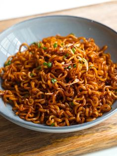

Stir-Fried Noodles Recipe
This quick and easy stir-fried noodle recipe is packed with veggies and flavor. Perfect for a satisfying meal any time!
Preparation Time
- Prep: 10 minutes
- Cooking: 10 minutes
Ingredients
For the Noodles
- 200g noodles (any type: ramen, egg noodles, or rice noodles)
- 1 tbsp vegetable oil
- 1/2 cup sliced bell peppers
- 1/2 cup sliced carrots
- 1/2 cup sliced mushrooms
- 1/4 cup chopped green onions
- 1/2 cup bean sprouts (optional)
For the Sauce
- 2 tbsp soy sauce
- 1 tbsp oyster sauce or hoisin sauce
- 1 tsp sesame oil
- 1 tsp rice vinegar or lemon juice
- 1/2 tsp sugar (optional)
- 1/2 tsp crushed red pepper flakes (optional for spice)
Instructions
- Cook the Noodles: Boil noodles according to package instructions. Drain and set aside.
- Prepare the Sauce: In a small bowl, mix soy sauce, oyster sauce, sesame oil, rice vinegar, sugar, and red pepper flakes. Set aside.
- Stir-Fry the Vegetables: Heat oil in a large skillet or wok over medium-high heat. Add bell peppers, carrots, and mushrooms, and stir-fry for 3-4 minutes until slightly softened.
- Add the Noodles and Sauce: Add cooked noodles to the skillet with the vegetables. Pour in the sauce and toss well to coat everything evenly. Add bean sprouts and green onions, and cook for another 2 minutes until heated through.
- Serve hot and enjoy your flavorful stir-fried noodles!
Nutrition
| Calories | 300 kcal per serving |
|---|
| Protein | 6g |
|---|
| Carbs | 45g |
|---|
| Fat | 8g |
|---|